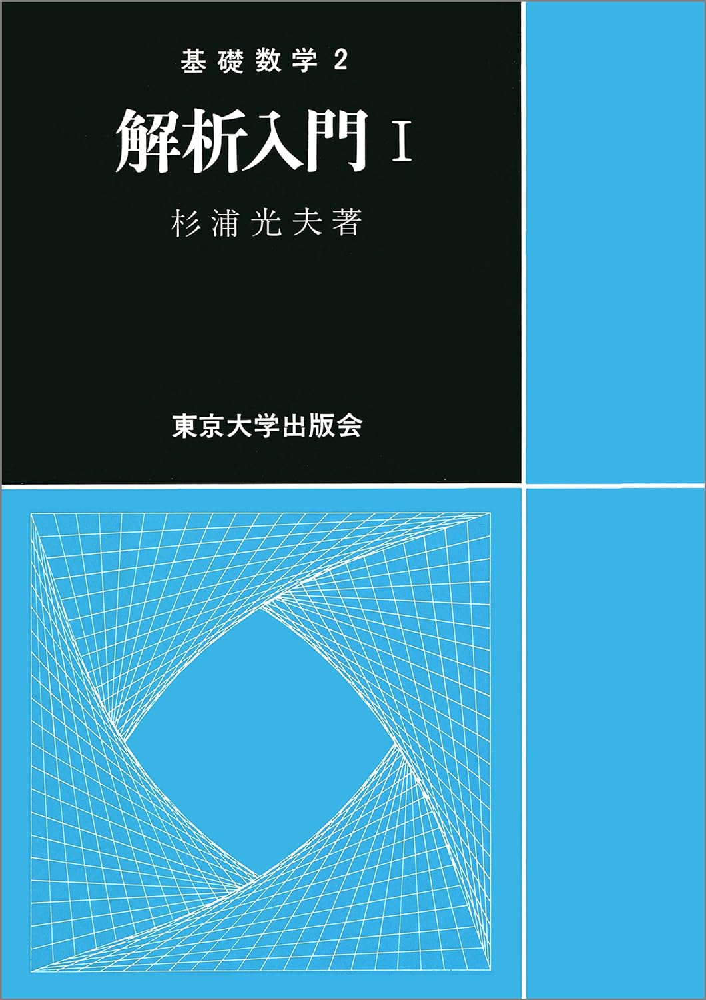
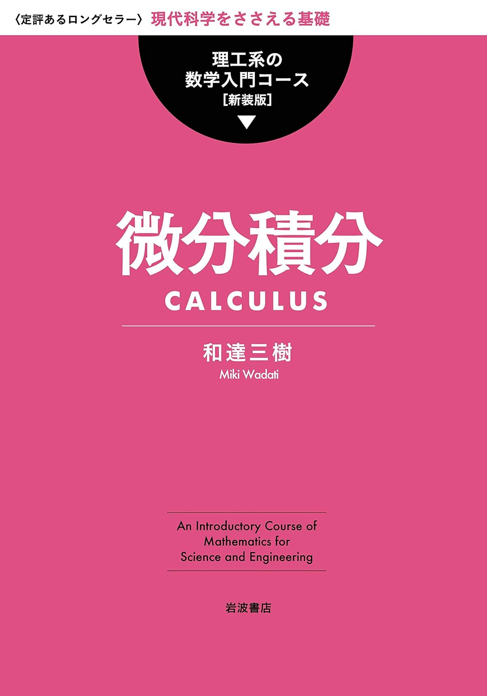
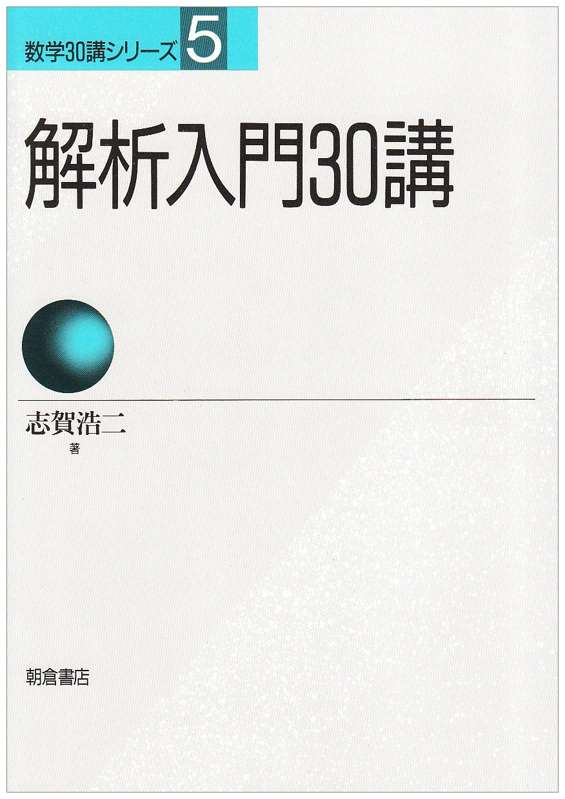

解析学
解析学のおすすめ参考書です。数学科か理工系かで勉強の仕方が少し異なります。
1冊でマスター 大学の微分積分 石井俊全著
大学で扱う微積の内容の初歩中の初歩を「これでもか！」というぐらい易しく丁寧に解説してくれている貴重な一冊。別冊で付いている問題演習と解答もまた、多くの大学生を救うこと間違いなしだ。

解析入門I 杉浦光夫著
数学科の人が解析学をしっかり勉強するといったらこの本。数学の中では(一応)入門書の立ち位置だが、数学的に極めて厳密に記述されており、決して易しくはない。知的好奇心をモチベーションに、じっくり味わって読み進めたい。ときおり挟まれる「うんちく」で心が癒されること間違いなし。

微分積分 和達三樹著
理工系の学生に向けて書かれた微分積分の入門書。いわゆる数学科ではない「理工系の大学生」が最低限身につけるべき知識が網羅されており、例題も豊富で勉強しやすい。先走って大学数学の勉強をしてみたい中学生や高校生にもおススメだ。

解析入門30講 志賀浩二著
志賀先生の30講シリーズは通常の数学書とは明らかに毛色が異なっており、日常的な例などから数学をやさしく説明されているので定義や定理のイメージがつきやすい。数学書の数式の数々に圧倒されてしまった初学者はこういった本を読んでイメージを膨らませてみるとよい。